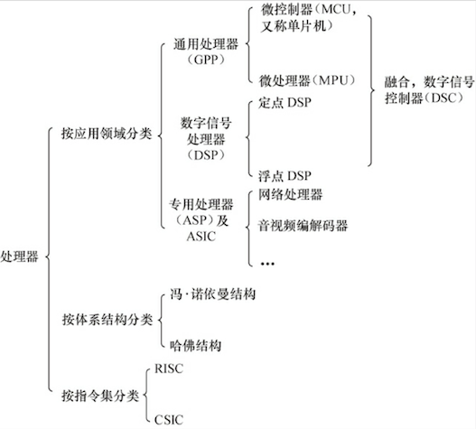

概念
机制，解决提供什么能力；策略，处理如何使用这些能力。一般，驱动属于机制范畴；应用归于策略范畴。
（对策略透明的）驱动分类
- 字符设备（open、close、read、write）：触摸屏、USB、鼠标等
- 块设备：硬盘、eMMC等
- 网络接口：
内核划分

设备驱动与整个软硬件系统的关系

内核的组成部分

内核源代码目录结构
| 目录、文件 | 说明 |
|---|---|
| Documentation/ | 内核各部分的通用解释和注释 |
| arch/ | 和硬件体系结构相关 |
| block/ | 块设备驱动程序 I/O 调度 |
| certs/ | |
| crypto/ | 常用加密和散列算法（如 AES 、 SHA 等），还有一些压缩和 CRC 校验算法 |
| drivers/ | 设备驱动程序 |
| firmware/ | |
| fs/ | 支持的各种文件系统 |
| include/ | 头文件 |
| init/ | 内核初始化代码 |
| ipc/ | 进程间通信代码 |
| kernel/ | 内核部分，包括进程调度、定时器等，而和平台相关的部分在 arch/*/kernel/ |
| lib/ | 库文件 |
| mm/ | 内存管理，和平台相关部分在 arch/*/mm/ |
| net/ | 网络相关，实现各种网络协议 |
| samples/ | |
| scripts/ | 用于配置内核的脚本文件 |
| security/ | 主要是 SELinx 模块 |
| sound/ | ALSA 、OSS 音频设备驱动核心代码和常用设备驱动 |
| tools/ | |
| usr/ | 实现用于打包和压缩的 cpio 等 |
| virt/ | |
| COPYING | |
| CREDITS | |
| Kbuild | 内核的编译系统 |
| Kconfig | 给用户提供配置选择的功能 |
| MAINTAINERS | |
| Makefile | 定义 Linux 内核编译规则 |
| README | |
| REPORTING-BUGS |
内核的编译
推荐 make menuconfig
- Makefile
- 配置文件（Kconfig）
- 配置工具
驱动开发
Linux 内核中增加程序需要完成以下3项工作：
- 将编写的源代码复制到Linux内核源代码的相应目录
- 在目录的 Kconfig 文件中增加关于新源代码对应项目的编译配置选项
- 在目录的 Makefile 文件中增加对新源代码的编译条目
编程风格
- Documents/CodingStyle
- scripts/checkpatch.pl：检查代码风格是否符合 CodingStyle
- 工程阶段，一般可以在 SCM 软件的服务器端用 pre-commit hook，自动检查工程师提交的代码是否符合 Linux 的编码风格，如果不符合，则自动拦截
内核模块程序结构
模块加载函数：
insmod(或modprobe) 模块名参数名=参数值。运行时，应使用逗号分隔输入的数组元素
一般以 __init 标识声明
- 以 “module_init” 形式指定。成功返回 0，失败则返回错误编码（在
中定义） - 可使用 request_module(module_name) 加载其它内核模块
- 只是初始化阶段需要的数据，也可被定义为 __initdata
模块卸载函数：
- rmmod 模块名参数名
- 一般以 __exit 标识声明
- 以 “module_exit” 形式指定。成功返回 0，失败则返回错误编码（在
中定义） - 只是退出阶段采用的数据，可被定义为 __exitdata
模块许可证声明：
- GPL、GPL v2、GPL and additional rights、Dual BSD/GPL、Dual MPL/GPL 和 Proprietary
模块参数（可选）
- 可用 “module_param(参数名, 参数类型, 参数读/写权限)” 为模块定义一个参数
- 参数类型可以是 byte、short、short、int、uint、long、ulong、sharp、bool 或 invbool
- 模块也可拥有参数数组，形式 "module_param_array (参数组名, 数组类型, 数组长, 参数读/写权限)"
模块导出符号（可选）
- 可使用宏 EXPORT_SYMBOL(符号名) 、EXPORT_SYMBOL_GPL(符号名) 导出符号到内核符号表中
模块声明与描述（可选）
- MODULE_AUTHOR
- MODULE_DESCRIPTION
- MODULE_VERSION
- MODULE_DEVICE_TABLE
- MODULE_ALIAS
模块的使用计数
- try_module_get (&module) ：增加模块使用计数。0表示调用失败
- module_put (&module) ：减少模块使用计数。
模块的编译
Makefile
一个模块包括多个 .c 文件，则 Makefile 中
obj-m := module name.o modulename-objs := file1.o file2.o
文件系统与设备文件
文件操作系统调用
创建
int creat(const char *filename, mode_t mode);
参数 mode 指定新建文件存取，同 umask 一起决定文件最终权限
打开
int open(const char *pathname, int flags);
读写
int read(int fd, const void *buf, size_t length);
int write(int fd, const void *buf, size_t length);
定位
int lseek(int fd, offset_t offset, int whence);
- whence：SEEK_SET、SEEK_CUR、SEEK_END
关闭
int close(int fd);
C 库文件操作
创建和打开
FILE *fopen(const char *path, const char *mode);
读写
int fgetc(FILE *stream);
int fputc(int c, FILE *stream);
char *fgets(char *s, int n, FILE *stream);
int fputs(const char *s, FILE *stream);
int fprintf(FILE *stream, const char *format, …);
int fscanf(FILE *stream, const char *format, …);
size_t fread(void *ptr, size_t size, size_t n, FILE *stream);
size_t fwrite(const void *ptr, size_t size, size_t n, FILE *stream);
定位
int fgetpos(FILE *stream, fpot_t *pos);
int fsetpos(FILE *stream, const fpos_t *post);
int fseek(FILE *stream, long offset, int whence);
关闭
int fclose(FILE *stream);
文件系统目录结构
Linux 根目录（即 “/”）
| 目录 | 说明 |
|---|---|
| /bin | 基本明命令， ls、cp、mkdir 等 |
| /sbin | 系统命令，mod probe、hwclock、ifconfig 等 |
| /dev | 设备文件存储目录 |
| /etc | 系统配置文件 |
| /lib | 系统库文件存放 |
| /mnt | 挂载存储设备等挂载目录 |
| /opt | 有些软件包安装位置 |
| /proc | 操作系统运行时，进程及内核信息存放。伪文件系统 proc 挂载目录，存在于内存 |
| /tmp | 临时文件 |
| /usr | 存放程序目录，如用户命令、用户库等 |
| /var | 存放系统日志等 |
| /sys | sysfs 文件系统映射目录 |
硬件基础
处理器

存储器

常见外设接口与总线工作方式
- 串口
- I2C（内置集成电路）
- SPI（串行外设接口）
- USB（通用串行总线）
- 以太网接口
- PCI（外围部件互连） 和 PCI-E
- SD 和 SDIO
- CPLD（复杂可编程逻辑器件）和 FPGA（现场可编程门阵列）
调试常用仪器仪表
- 万用表：测量电平、使用二极管测量电路板上网络的连通性
- 示波器
- 逻辑分析仪
附录
建议 “微信读书” 王宝华的《Linux 设备驱动开发详解：基于最新的 Linux 4.0 内核》
- Ubuntu 的 VirtualBox 镜像 (提取码 m7g5)。系统中 账号、密码 "baohua"
- Linux Cross Reference：Linux内核源码的交叉索引
- minicom：串口通信工具
- Linux Device Drivers 3 examples
- LinuxQuestions
- Linux Kernel Newbies：Linux 每个版本具体变更
- Linux Weather Forecast：Linux 近期热点和走向